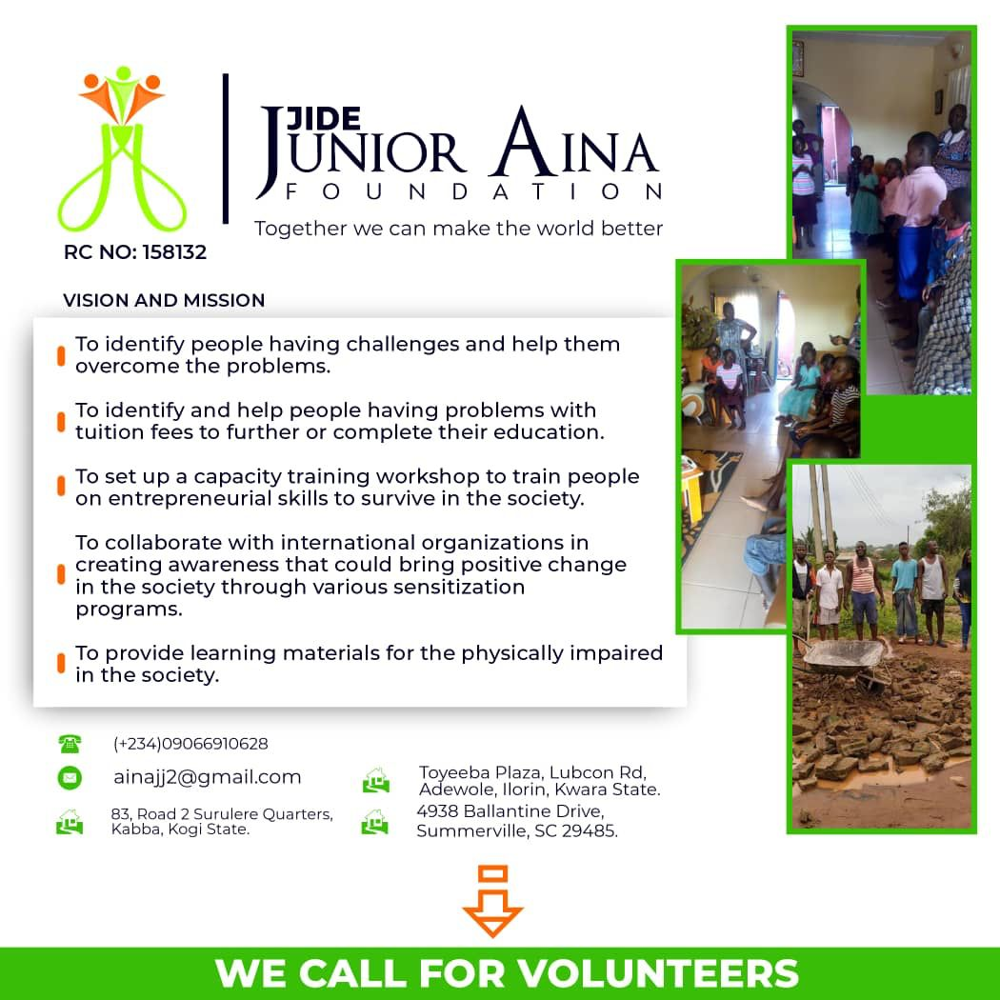
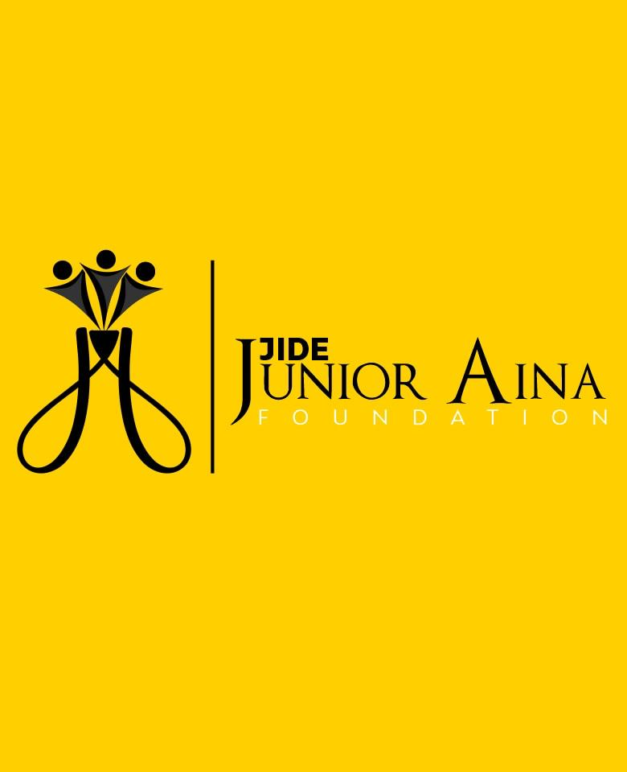

WHO WE ARE.
Jide Junior Aina Foundation is a non profit, non political organisation committed to Identification of people living with health challenges with aim to help them overcome the challenges, Identification of people who need help with access to education, human capacity developmement through various skill training programs, bridging the inequalities in delivery of education to the physically challenged and collaborating with government and international organisations in achieving the Sustainable Development Goals SDGs.



Our Mission
We are deliberate about improvement of the general welfare of the society through our community developmement programs, aimed at poverty reduction, provididng access to profitable education while ensuring inclusiveness and catering for the welfare of the sick by provididng accsess to various health programs that are targeted at improving communal life .
Our Vision
our vision to make the society better is deeply rooted in the Sustainable Development SDGs. to see that the set goals are met according to plan. we are committed to working with relevant stake holders to see the development of the communties espescially by encouraging a communal approach to the achievement of the set goals and objectives of the United Nations.
Our Commitment
In our dynamic world we are committed to flexibility and innovation finding new ways to bring about the desired change, working with tech and our volunteers in bringing about new ways to better improve the life of the the members of society and reducing the inequality gap as it is now made more obvious by the effect of covid19 .
Leadership
We are led by a team of competent and vibrant individuals with love for humamity, please meet our Leadership Team.
Olaoluwa Aina
Secretary
Graduate of law, singer and songwriter, former speaker of childrens parliament and advocate for the rights of a child. An innovative who believes that technology is the tool for reshaping the future. with great people management skills and charisma, he is secretary of the organisation he is a core creative and innovative personality.

Jide Aina
CEO/MD
BSc. political science, Msc. Peace Studies and Conflict Resolution. conscious of the need for the bridge in the inequality gap, a visioneer with love for humanity at the core of his heart, he is committed to create civil awareness on sickle cell, and education of the girl child. He is very intentional about human capacity development, digital inclusiveness, and human rights. He brings his vast experience to leading the vision..
Shaniqua J Fludd
Trustee
Ralph H Johnson Department of veteran’s affairs medical center Charleston SC United States. A woman with a heart that beats for humanity. dedicates herself to ensuring impact in the lives of the under privileged. She Is passionate about education of the next generation.
Alice Aina
Trustee
Retired matron, with over 35 years experience in the health sector, she has a deep understanding of the primary health care sector. She has served in various capacities facilitating several WHO and other health orgainsations health care programs. she has vast experience in the rural and urban health sector. She believes so much in women empowerment and girl child Education.